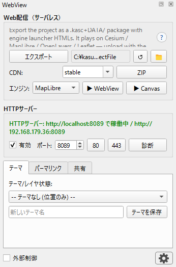

2. 主な機能
パネル「Web配信」グループの主要ボタンです。

【エクスポート】
.kasc + DATA/ + <engine>.html + index.html
を出力します。
ファイル出力のみで、起動・登録は行いません（kasugai_canvas*.zip
も 生成しません — ZIP
は下記【ZIP】ボタンでダウンロード時に生成します）。
出力先は保存先フォルダ名ボタンで変更します（現在の出力先を中央省略で表示。クリックでフォルダ選択、↺
で既定にリセット。📁
で出力フォルダをファイルマネージャで開く）。 既定は Canvas
インストール先
<install>/QGIS_projects/<プロジェクト名>、未検出時は
<ドキュメント>/kasugai_canvas_qgis です。
【ZIP】
エクスポート物一式を
kasugai_canvas_<チャンネル>.zip としてブラウザで
ダウンロードします（ファイル名は CDN コンボのチャンネルを反映。 例:
kasugai_canvas_stable.zip）。クリック時にその場で ZIP
を生成するため 常に最新内容です（要 HTTP
サーバー稼働）。 静的ホストへの配置・Re:Earth qgis:
取り込み用に使います。
【▶ WebView】
ホスト版 kasugai-canvas-web（GitHubPages CDN）の
エンジンで開き、データは :8089/export-data/
から供給します。 エクスポート →
ブラウザ起動まで一発実行。要インターネット・ HTTP
サーバー稼働（Canvas 未インストールでも可）。 使用チャンネルは
CDN: コンボで選択します。
CDN: コンボ: ▶ WebView
が使うホスト版チャンネルと ZIP ファイル名の
<チャンネル> 部を選択します
（stable/unstable/カスタムURL。QSettings
kasugai_hosted_channel に保存）。
Engine: コンボ:
▶ WebView/▶ Canvas が開くエンジンを選択します
（Cesium/MapLibre/OpenLayers/Leaflet。選択は QSettings
kasugai_engine に保存）。
【▶ Canvas】
エクスポート済みのプロジェクトを稼働中の KASUGAI Canvas ローカルサーバー（:8510）へ登録・表示切替・ブラウザ起動します。 エクスポートは行わないため、未出力の場合は Export を先に実行するよう メッセージで案内します。Canvas 未検出時はボタンが Install KASUGAI Canvas 表示になり、セットアップ（.kasc 関連付けあり）/ ポータブルZIP を選んでバックグラウンドインストール後に起動します。
ルート解決（フォールバック）
▶ Open・/kasugai・kasugaiExport
は応答の via で供給元を返します:
via |
条件 | 開く URL |
|---|---|---|
kasugai |
Canvas ローカルサーバー（既定 port 8510）稼働 | http://localhost:8510/<engine>/?project=<id> |
qgis-http |
Canvas はインストール済みだが未起動 | 本サーバーが <install>/web/
を静的配信＋/export-data/ でデータ供給 |
hosted |
Canvas 未インストール（要インターネット） | ホスト版エンジン（kasugai-canvas-web / GitHub Pages、チャンネルは
CDN: コンボ）＋/export-data/ |
null |
いずれも不可 | 出力のみ成功（.kasc を手動で開く） |
WebGIS
出力フォルダとエンジン（web/ の中身）を一般的な Web
サーバー （GitHub Pages / Cloudflare / Vercel /
レンタルサーバー等の静的ホスト） へアップするだけで、QGIS
なしで動く単独の WebGIS になります （Canvas の
?kasc= 直読みモード）。配信に特別なサーバーサイド処理は
不要で、.kasc+DATA/+システム一式を切り出して配布単位とすることも
できます。
外部ホストへの配信は、エンジン本体（web/
の中身）の置き場所で2パターンに 分かれます。
| A. kasugai-canvas-web の CDN を利用（既定） | B. エンジンを同一ホストに同梱 | |
|---|---|---|
| 構成 | ホストには .kasc+DATA/ のみ。https://yamamoto-ryuzo.github.io/kasugai-canvas-web/<stable|unstable>/<engine>/?kasc=<.kascのURL> を開く |
ホストに .kasc+DATA/+web/（エンジン一式）を配置。<engine>.html が同階層のエンジンを自動探索して開く |
| 初回読込 | GitHub Pages の CDN（Fastly）がエッジ配信。エンジンJSの取得は速い | LAN/閉域内なら最速。一般公開ではホストの性能次第 |
| 安定性 | 高可用だがインターネット必須。github.io 到達不能だと表示されない | 外部依存ゼロ。オフライン・閉域網・github.io ブロック環境でも動く |
| CORS | データ側ホストで Access-Control-Allow-Origin
が必要（github.io のエンジンが .kasc
をクロスオリジン fetch するため）。GitHub Pages は *
を付与済み、Cloudflare Pages/Vercel 等は _headers
等で設定 |
同一オリジンなので不要 |
| HTTPS | データ側ホストは HTTPS が実質必須（https のエンジンから http ホストへの fetch は Mixed Content でブロックされる。localhost は例外で動作） | 不要（http のみでも動く） |
| 転送量・保守 | エクスポート物はデータのみで軽量。エンジン更新は kasugai-canvas-web 側に追従 | エンジン分（数十MB級）も自分の帯域。エンジン更新は手動 |
目安: 公開配信は A（CDN）が既定。B
は閉域網・オフライン利用・ CORS/HTTPS
を設定できないホスト・自己完結アーカイブ向けです。 どちらでも
.kasc+DATA/
は自ホストから読むため、体感速度の大半は データ配信側で決まります。
起動HTMLは ./ ../ ../../ /
の順にエンジンを自動探索し、同一ホストに
あればそちらを優先、無ければホスト版へのリンクを出すため A/B の混在も
安全です（index.html 経路3からもホスト版へ辿れます）。自前
CDN/ホストを 使う場合はパネルの CDN: コンボ（QSettings
kasugai_hosted_channel）に 完全URL（末尾 /
付き）を設定します。kasugai-canvas-web のチャンネルは
stable（既定）と unstable
の2系統で、エンジンは実質上位互換を維持して 更新されています。